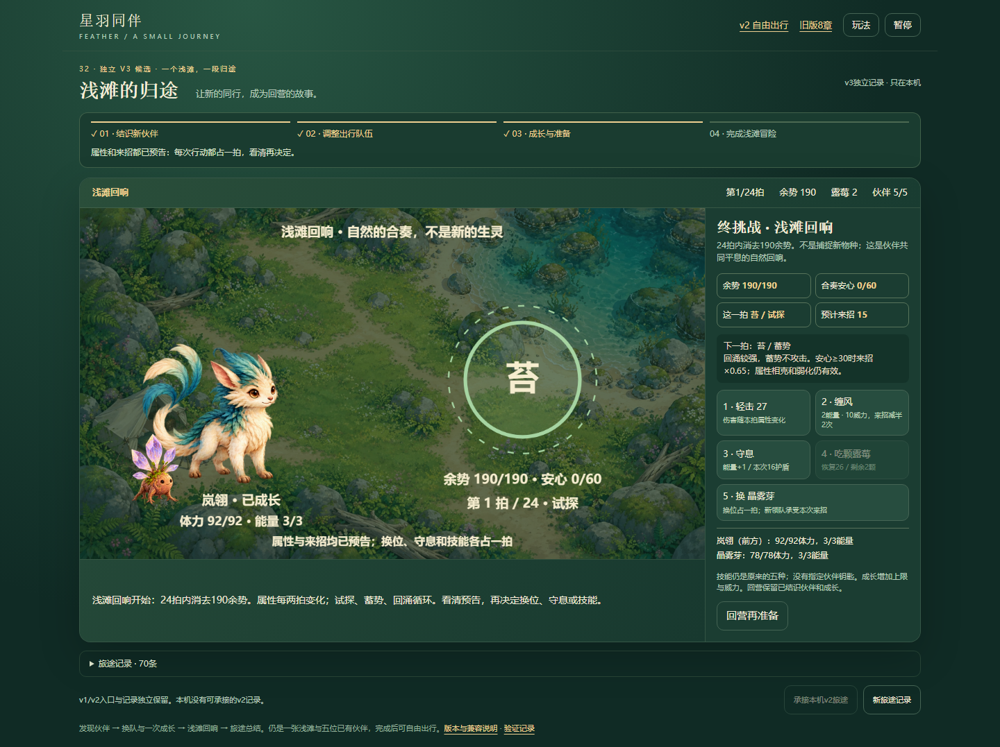
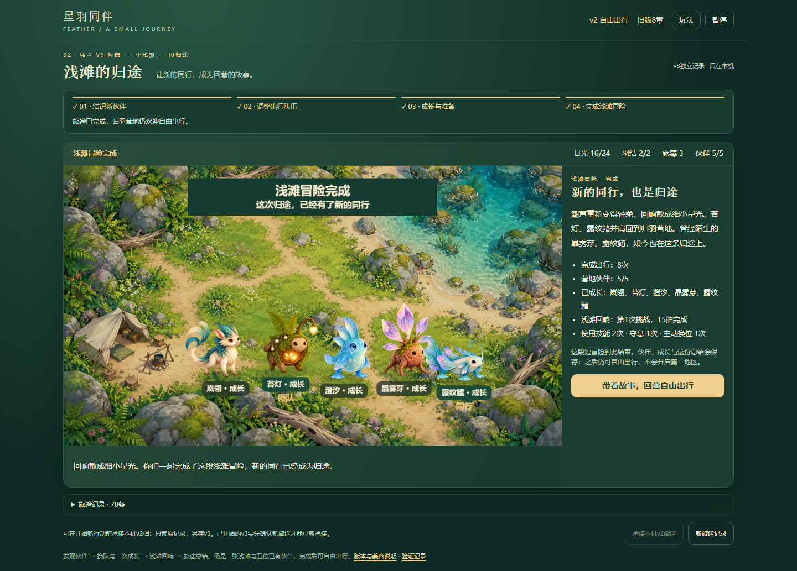
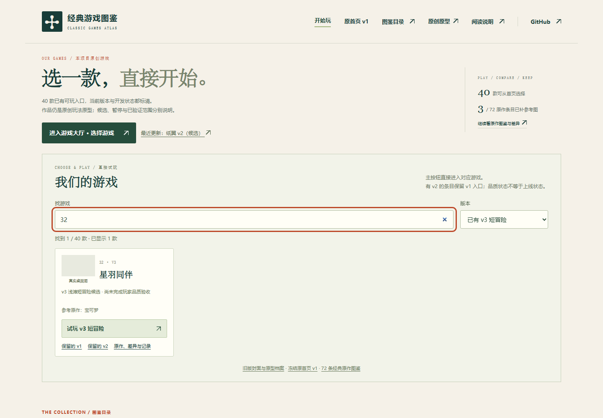
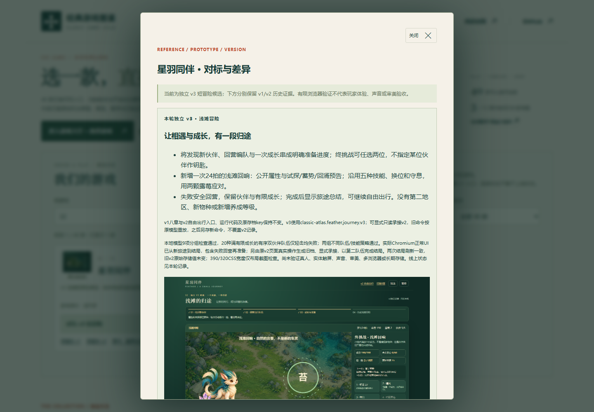
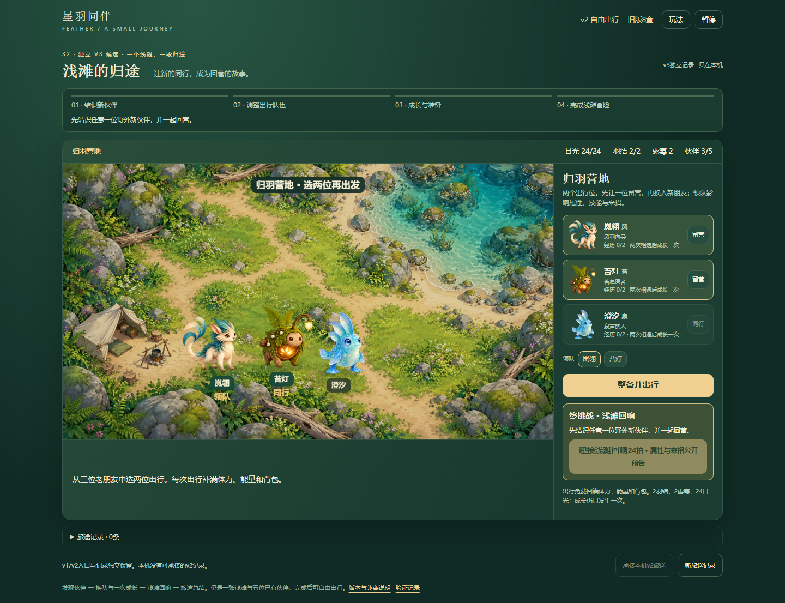
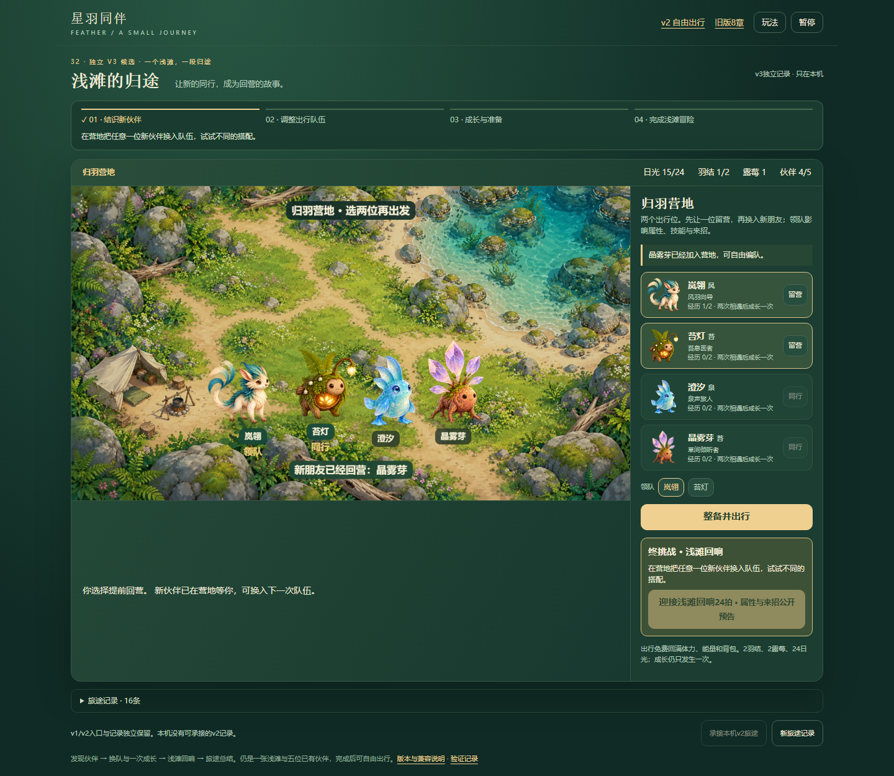
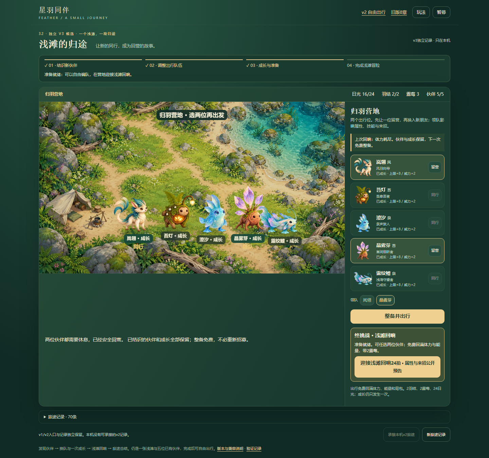
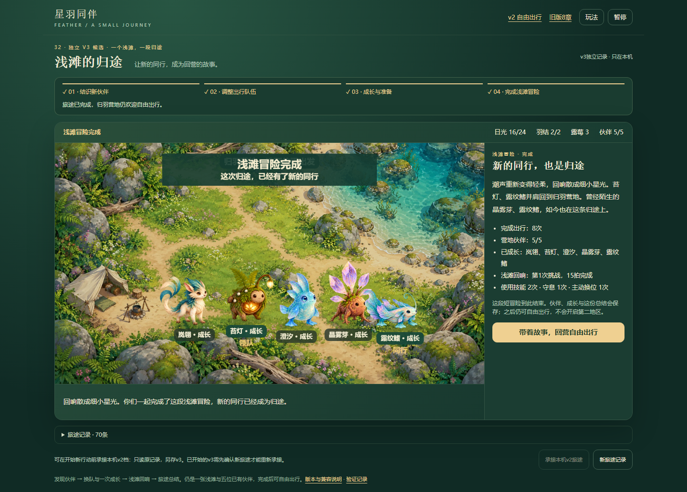
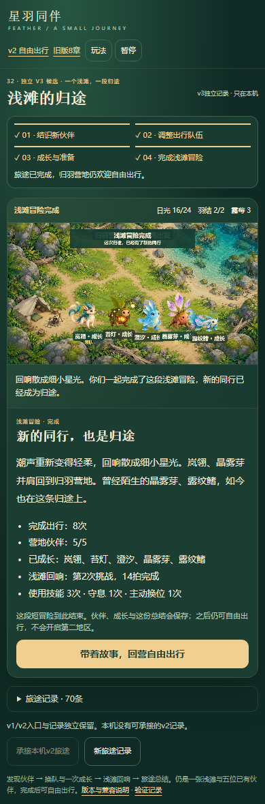

一个浅滩、五位已有伙伴、一次终挑战与结局。独立v3候选；v1八章和v2开放出行保留。模型与浏览器流程分别记录，未代表真人、真机、声音、审美或长期存储验收。
打开v3短冒险 · 范围与兼容 · 模型报告 · 本地正常UI两条旅途 · 保留核对
2026-10-20 运行提交 53759c1741aaf683cf6a02972a50fed8f901eebe 已通过 Pages 部署。公开网站两条正常UI旅途完成，14/15拍结局、失败回营再准备、旧档承接与两次结局刷新通过；65文件与提交匹配。首页总数仍为40，实际导航与v1/v2/v3链接专项通过。
Pages成功记录 · 发布元数据 · 线上分阶段总报告 · 首页专项 · 65文件核对 · 保留的原导航等待超时记录
两条线上游戏旅途先通过；首页点击后等待导航超时，已保留原报告，并仅补做实际进入v3与对照链接的专项核验。没有用重跑旅途或修改游戏状态掩盖这一步。
岚翎＋晶雾芽14拍、苔灯＋露纹鳍15拍完成；两组均实际使用不同技能、换位和守息。第一条旅途先真实失败再准备；第二条由原v2页面正常操作生成旧档后显式承接，旧存储原值未变。两次结局直接刷新精确恢复，完成后仍可自由出行。




以下完整截图来自本地实际Chromium页面，点击可看原图；不是生成的游戏截图。手机宽度仅布局检查，不是原生触屏战斗。





